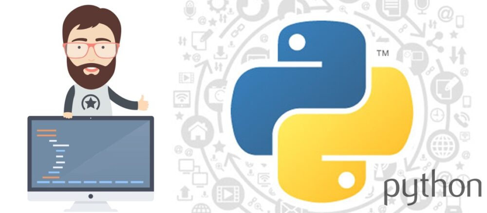

Python Nedir, Ne İşe Yarar? Python Kullanım Alanları

Python Nedir?
Python, ilk kez 1990 lı yılların başların da Guido Van Rossum tarafından tasarlanmıştır. Python adını bir yılan türü olan pitondan değil ismini bir gösteri den almaktadır. Python ABC programlama diline alternatif olarak geliştirilmiştir. Python Unix, Linux, Windows, Mac Amiga ve Symbian gibi hemen hemen bir çok platformda sorunsuz olarak çalışmaktadır. . Python programlama dili sayesinde sistem programlama, ağ programlama, web programlama, veri tabanı yazılımı ve uygulama gibi bir çok alan da yazılım geliştirilebilmektedir.
Python Ne İşe Yarar?
Python programlama dili ile birlikte Web programlama, masaüstü programlama ve mobil programlama gibi bir çok alan da kullanımı yapılmaktadır. Python programlama dili, diğer programlama dillerine göre çok daha basit bir söz dizilimine sahiptir. Basit olması hiç bir zaman sizi yanıltmasın ki Python bir çok projenin üstesinden gelebilecek düzeyde bir programlama dilidir.
Python Kullanım Alanları
Python programlama dili ile birlikte bir çok çeşitli uygulamalar geliştirilebilen güçlü bir programlama dilidir. Yazılım geliştiricilerinin Python’ u tercih etmesi için bir çok neden bulunmaktadır. Bunlardan en başlıca sebepleri python programlama dilinin esnek bir yapıya sahip olması ile birlikte hem en güçlü hem de en basit kod kütüphaneleri ve frameworkleri bulundurmasıdır. Aşağıda Python programlama dilini kullanabileceğiniz bazı kullanım alanlarına yer verilmiştir.
Oyun Geliştirme :
Python programlama dili ile birlikte farklı türde oyunlar geliştirebilirsiniz. Python ile birlikte Pygame kütüphanesi kullanılarak oyun geliştirmeleri yapabilirsiniz. Pygame, oyun geliştirme için en popüler Python kütüphanesidir. Pygame sayesinde ses oynatma, grafik çizimi, fare girdisi gibi farklı fonksiyonların kullanımını yapabilirsiniz. Pygame ücretsiz bir şekilde Python da oyun oluşturabileceğiniz açık kaynak bir kütüphanedir. Python programlama dili sayesinde Macera oyunları, bulmaca oyunları masa tenisi oyunu, üç taş oyunu, adam asmaca ve tic tac toe gibi klasik oyunlar da geliştirebilirsiniz. Python ile yapacağınız oyunlar hemen hemen bütün işletim sistemleri üzerinde çalışabilmektedir.
Web Geliştirme
Yazılım geliştiricileri Python’u en çok Web geliştirme alanında kullanmaktadır. Python ile güçlü ve dinamik web siteleri geliştirebilirsiniz. Python Django, Pyramid ve Flask gibi popüler web frameworkleri içermektedir. Django, Pyramid ve Flask gibi frameworklerin kullanımı ile birlikte içerik yönetimi, backend veri tabanı erişimi, HTTP, SMTP, FTP,POP ve XML-RPC gibi ağ protokolleri yönetimi için gerekli özellikleri sağlar.Günümüzde en popüler Python web uygulamaları şu şekildedir. Google, Instagram, Youtube, Spotify ve Dropbox gibi popüler web uygulamalarında Python programlama dili kullanılmaktadır.
Veri Analizi
Python ile veri bilimciler tarafından verileri görselleştirmek oldukça kolaydır. Veri bilimciler python ile birlikte Seaborn ve Matplotlib gibi güçlü kütüphaneler sayesinde verileri görselleştirebilirsiniz. Veri bilimcileri Python’ u genel olarak analiz etme ve yapılanmış görsel içerikleri ayrıştırmak için kullanırlar. Python programlama dili ayrıca güçlü ve popüler olan bir diğer kütüphane Panda kütüphanesini de kullanmaktadır. Panda kütüphanesi sayesinde veri manipülasyonu ve analizler yapmak için sıkça kullanılmaktadır.
Yapay Zeka ve Makina Öğrenimi
Python programlama dili, günümüzde en popüler yapay zeka ve makine öğrenimi için kullanılan bir yazılım dilidir. Python kullanımı yapılarak yapay zeka ve makine öğrenimi için her gün büyük miktarlar da verilerin toplamını, analizi ve işlenmesi için kullanılmaktadır. Python programlama dilinin söz dizimi oldukça basittir. Hatta kullanılan söz dizimi günlük ingilizce konuşmasına benzediği için de kolay anlaşılabilir. Python programlama dili, Windows, Linux, MacOS ve Unix gibi popüler platformlarda sorunsuz bir şekilde çalışabilmektedir.
Robotik Uygulamalar
Python, robotik işletim sistemleri ile uyumlu bir programlama dilidir. Bu da robotik kodlama da python’ un tercih edilmesinin en popüler özelliklerinden birisidir. Python robotik işletim sistemleri ile uyumlu ve aynı zaman da robotik kodlama için gerekli olan bir çok hesaplama kütüphanesini barındırmaktadır. Yapılan bir araştırmaya göre ” Dünya genelinde robotik market büyüklüğü 2024 yılına kadar 80 milyar dolar olacağı belirtilmiştir”. Python programlama dilini bilmeyen bir kişi dahi, python kullanmasını öğrenebilir ve robotik uygulamalar geliştirebilir. Python öğrenimi kolay güçlü bir programlama dilidir.

Python ile Neler Yapılabilir?
Python programlama dili ilk kez Guido Van Rossum tarafından 1990 yılların başında ABC programlama diline alternatif olarak piyasaya sürülmüştür. Python ile hem mobil uygulamalar hemde masaüstü uygulamalar geliştirilebilmektedir. Python kullanımı ve öğrenimi kolay güçlü bir programlama dili olarak günümüzde en popüler diller arasında yer almaktadır. Python programlama dili sayesinde bir çok alan da geliştirmeler yapabilirsiniz. Web Programlama geliştirebilmek için Django, Pyramid, Bottle, Tornado, Flask ve web2Py kütüphaneleri kullanılabilir. Bu kütüphaneler sayesinde internet ortamında yayınlayabileceğiniz dinamik web sitelerinizi tasarlayabilirsiniz. Tasarlamış olduğunuz web sitelerinde ayrıca PHP komutlarını da kullanım yapabilirsiniz. PHP, çok geniş kullanımlı bir programlama dilidir. PHP sayesinde dinamik web siteleri oluşturabilirsiniz. Php nedir diye bir arama yapmak isterseniz web sitemizin makaleler sayfasını inceleyebilirsiniz. GUI geliştirmeleri için WxPython, Tkinter, PyGtk, PyGObject ve PyQt kütüphaneleri kullanılabilir. GUI, Graphical User Interface (Grafik Kullanıcı Arayüzü ) bilgisayar, telefon, tablet ve diğer dijital cihazların çalışabilmesi için kullanılan komut satırlarıdır. Bu komut satırları sayesinde kullanıcının girmiş olduğu her bir komut, işlemciye gönderilir ve daha sonrasında işlemci tarafından yapılması istenen işlemlerin gerçekleştirilmesi sağlanır. Bilimsel ve Sayısal geliştirmelerinde NumPy, SciPy, Pandas ve IPython kütüphaneleri kullanılabilir. Böylelikle veri veri analizcileri tarafından bir veri analiz edilebilir ve edilen analizler modelleme yapabilirler. Bununla birlikte paralel hesaplamalar ve görselleştirmeler yapılabilir. Ağ Programlama için Paramiko, OpenSSH, E-mail proccesing ve Twisted kütüphaneleri Bu kütüphaneler sayesinde kendi web server ve yük dengeleyicileri oluşturabilirsiniz.Python ile SMTP, FTP ve HTTP protokolleri uygulamak oldukça kolaydır. Mobil uygulamalar için Kivy kütüphanesini kullanabilirsiniz. Python kullanımı kolay bir dildir. Bu nedenle de yazılım geliştiricileri tarafından büyük ilgi görmektedir. Python sayesinde bir kaç komut satırı ile sitenizi tüm platformlarda kullanılmasını sağlayabilirsiniz. Oyun geliştirmek için Pygame kütüphanesini kullanabilirsiniz. Bu kütüphane sayesinde Python ile oyunlar geliştirebilir multi medya programları oluşturabilirsiniz. Ayrıca geliştirdiğiniz oyun ve programları her platform ve işletim sisteminde çalıştırabilirsiniz. Son olarak Python ile birlikte Sistem Yönetimleri için Ansible, Salt ve OpenStack kütüphanelerini de kullanabilirsiniz.

Python’un Önemli Avantajları
Python, üst düzey bir programlama dilidir. Söz diziminin ingilizceye benziyor olması da komut satırlarının okunması ve kolay anlaşılabilir bir programlama dilidir. Bu nedenle programlamaya yeni başlayacak olan kişilere genel olarak Python tavsiye edilmektedir. Bu da Python’u öğrenmenin en önemli avantajlarından birisi haline getiriyor. Aşağıda Python’ un önemli avantajları ile ilgili bilgilere yer verilmiştir. Python ile geliştirdiğiniz bir yazılımda bir den fazla hata olsa bile python, sadece bir hatayı göstermektedir. Bu da python da geliştirdiğiniz yazılımda hata ayıklamayı kolaylaştırmaktadır. Python, açık kaynak kodlu ve OSI onaylı açık kaynak lisansına sahiptir. Böylelikle yazılım geliştiricileri özgür içerikler geliştirebilir ve Python’a ait kaynak kodları indirip düzenlemeler yapabilir. Python ile geliştirilmiş bir yazılım çalıştırıldığında veri türü otomatik olarak atanmaktadır. Böylelikle bir kod çalıştırılacağı zaman değişken türü belirlenmez. Python kütüphanesi oldukça geniştir. Bu da python ile birlikte hemen hemen bir çok alan da dilediğiniz şekilde geliştirmeler yapabileceğiniz anlamına gelmektedir.